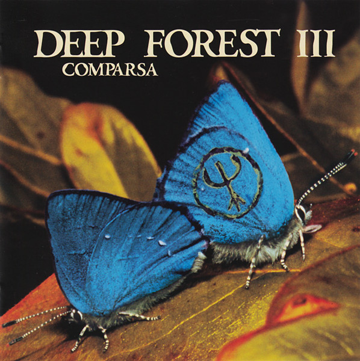

CD
Comparsa
Deep Forest
Media: NM · Sleeve: VG
CA$15.00
Discogs SuggestedCA$18.82
Discogs MedianCA$18.82
Discogs HighCA$18.82
- Physical Copy ID
- BB-CD-0959
- Year
- 1998
- Label
- Saint George
- Catalog #
- SAN 488725-2
- Country
- Europe
- Genre / Style
- Electronic · Experimental, Ambient